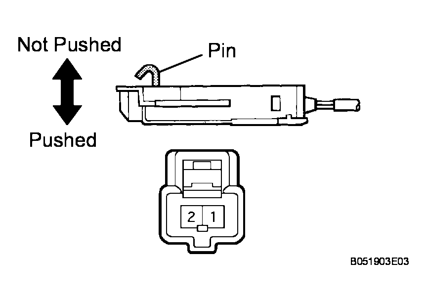
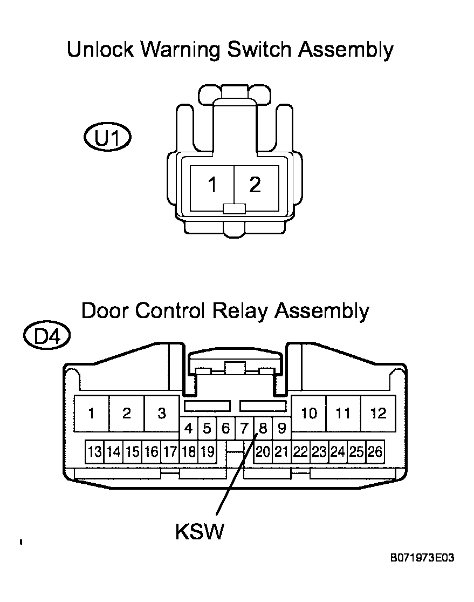
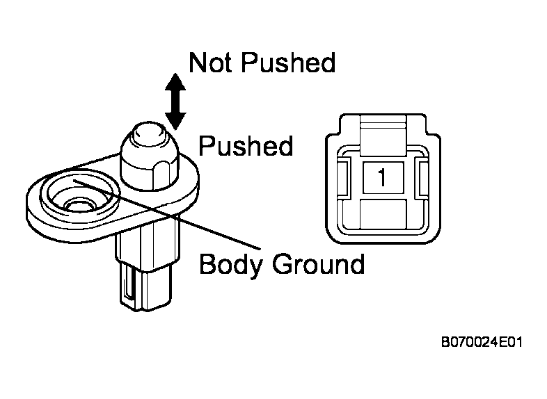
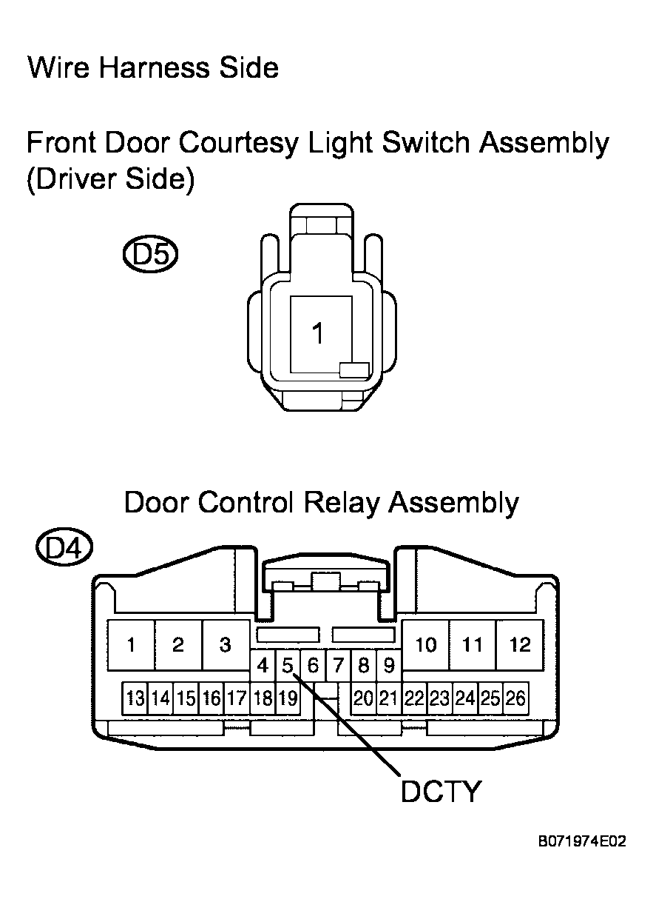

Inspection Procedure
- INSPECT UNLOCK WARNING SWITCH ASSEMBLY
- Remove the unlock warning switch.
- Measure the resistance of the switch.
Standard resistance

Courtesy of © TOYOTA, LICENSE AGREEMENT TMS1002TESTER CONNECTION SPECIFIED CONDITIONTester Connection Switch Condition Specified Condition 1 - 2 Not pushed 10 kΩ or higher 1 - 2 Pushed Below 1 Ω
NG : REPLACE UNLOCK WARNING SWITCH ASSEMBLY
OK : Go to Next Step
- CHECK WIRE HARNESS (UNLOCK WARNING SWITCH - DOOR CONTROL RELAY AND BODY GROUND)
- Disconnect the U1 switch connector.
- Disconnect the D4 relay connector.
- Measure the resistance of the wire harness side connectors.
Standard resistance

Courtesy of © TOYOTA, LICENSE AGREEMENT TMS1002TESTER CONNECTION SPECIFIED CONDITIONTester Connection Specified Condition U1-2 - D4-8 (KSW) Below 1 Ω U1-1 - Body ground Below 1 Ω
NG : REPAIR OR REPLACE HARNESS AND CONNECTOR
OK : Go to Next Step
- INSPECT FRONT DOOR COURTESY LIGHT SWITCH ASSEMBLY (DRIVER SIDE)
- Remove the courtesy light switch.
- Measure the resistance of the switch.
Standard resistance

Courtesy of © TOYOTA, LICENSE AGREEMENT TMS1002TESTER CONNECTION SPECIFIED CONDITIONTester Connection Switch Condition Specified Condition 1 - Body ground Not pushed Below 1 Ω 1 - Body ground Pushed 10 kΩ or higher
NG : REPLACE FRONT DOOR COURTESY LIGHT SWITCH ASSEMBLY (DRIVER SIDE)
OK : Go to Next Step
- CHECK WIRE HARNESS (FRONT DOOR COURTESY LIGHT SWITCH LH - DOOR CONTROL RELAY)
- Disconnect the D5 switch connector.
- Disconnect the D4 relay connector.
- Measure the resistance of the wire harness side connectors.
Standard resistance

Courtesy of © TOYOTA, LICENSE AGREEMENT TMS1002TESTER CONNECTION SPECIFIED CONDITIONTester Connection Specified Condition D5-1 - D4-5 (DCTY) Below 1 Ω
NG : REPAIR OR REPLACE HARNESS AND CONNECTOR
OK : Go to Next Step
REPLACE DOOR CONTROL RELAY ASSEMBLY